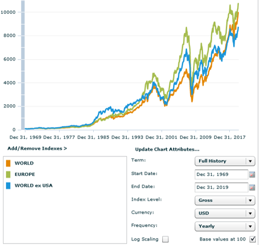

פורסם בתאריך 11.6.2020
התכנים בפוסט זה, כמו כל שאר התכנים בבלוג, הינם תכנים לימודיים במהותם, הם אינם מהווים ייעוץ או המלצה לביצוע פעולה בנייר ערך, ואין לראות בהם תחליף לייעוץ השקעות ו/או ייעוץ פנסיוני המתחשב בצרכיו הייחודיים של כל אדם.
היום יתחיל, באיחור של שנה בעקבות מגיפת הקורונה, טורניר אליפות אירופה בכדורגל לאומות, יורו 2020. כמו לפני כל טורניר גדול, ההתרגשות בשיאה, תעשיית ההימורים משגשגת, ורבים מנסים לחזות אילו נבחרות יגיעו לשלבים המאוחרים ומי תניף את הגביע. האם אלופת העולם צרפת, בעלת החוד הקטלני, תזכה גם באליפות אירופה? האם האלופה המכהנת פורטוגל תנצל את הסגל המרשים שלה להגנה על התואר? האם גרמניה וספרד שהובילו את היבשת בעשור האחרון ישובו לשלבים המאוחרים אחרי מונדיאל מאכזב? האם אנגליה תצליח להגיע לגמר אותו תארח, לאחר מונדיאל מוצלח וסגל עמוס בכישרונות צעירים? איזו נבחרת קטנה תפתיע הפעם ותצליח להדיח את אריות היבשת?

התשובות לכל השאלות האלה קשות מאוד לחיזוי. לאוהדים יש הסברים מפה ועד הודעה חדשה למה דווקא הם צודקים בהימורים שלהם, וככל שהם יחזרו באזני חבריהם על הטיעונים הללו, הם יעברו תהליך של שכנוע עצמי ויתאהבו בטיעון של עצמם. חלקם גם יהמרו על כספם בהתאם לאותו תהליך שכנוע עצמי.
הבעיה בכל הסיפור היא שכמעט כולם יטעו, ומי שירוויח הן חברות ההימורים. זה אמנם לא סוף העולם להמר על סכומים קטנים לשם העניין והריגוש, אבל לנחש בדיוק רב מי תהיינה הנבחרות שתגענה לשלבים המאוחרים, ובפרט מי תזכה בתואר, זה עניין כמעט בלתי אפשרי. הסיבות לכך רבות ומגוונות:
• הרכבים טובים על הנייר לא תמיד מתחברים לנבחרת מגובשת.
• בטורנירים קצרים המומנטום משחק תפקיד מרכזי, כך שנבחרת פחות מוכשרת במומנטום חיובי יכולה להיות עדיפה על נבחרת מוכשרת במומנטום שלילי.
• במשחקי נוק-אאוט אסור לטעות, מעידה קטנה והולכים הביתה.
• בטורניר קצר כמו היורו, פציעה של שחקן מפתח יכולה לגרום לו להיעדר מכל הטורניר.
• כל המאמנים, השחקנים והפרשנים יעידו – חוץ מיכולת טובה ובטחון עצמי צריך גם לא מעט מזל.
איך כל זה קשור להשקעות?
גם בהשקעות, כמו בטורניר כדורגל בינלאומי, קשה מאוד לחזות איזו מדינה תוביל בתקופה הקרובה. השוק האמריקאי אמנם הוביל בתשואות בעשור האחרון, אך בהסתכלות ארוכת טווח ניתן לראות כי כאשר משווים את השוק האמריקאי לשאר העולם המפותח, רואים שהעניין מאוד מחזורי – לפעמים השוק האמריקאי מוביל ולפעמים הוא מפגר מול שאר העולם.

בנוסף, אם ניקח בחשבון את רמות המחירים הגבוהות של השוק האמריקאי, נבין למה התמקדות ב-S&P 500, כפי שמשקיעים ישראלים רבים עושים, היא לא רעיון כ"כ מוצלח.
אז אחרי שהבנו שלא כדאי להשקיע רק בשוק האמריקאי – גם בשאר העולם קשה לנבא איזו מדינה/אזור גיאוגרפי יובילו בתקופה הקרובה. האם סין תהיה קטר הצמיחה? האם גרמניה, הכלכלה הגדולה באירופה, תוביל? האם בריטניה שמה מאחוריה את הברקזיט ותנצל את שיעור ההתחסנות הגבוה שלה לצמיחה מהירה? לשאלות אלה ואחרות יש תשובות רבות עם טיעונים שונים, מטיעוני מאקרו כלכלה ועד ספקולציות כאלה ואחרות. כמו בקרב המהמרים, גם בקרב המשקיעים ומנהלי ההשקעות רבים מתאהבים בטיעון של עצמם, וגם כאן רובם ייטעו. תחזיות, מנומקות ככל שיהיו, הן בסופו של דבר הימור, ומרביתן מתבררות כשגויות.
איך נחליט במה להשקיע בתוך כל אי הוודאות?
מה שיפה בהשקעות, זה שבניגוד להימורים אין צורך לבחור סוס מנצח (וככל הנראה להיכשל). ניתן פשוט להשקיע בכל המתחרים, בכל רחבי העולם, וליהנות מהצמיחה הכוללת. פעם מדינה אחת תוביל ופעם אחרת, אבל השוק כולו ימשיך לצמוח ואנחנו ניהנה מהפירות שלו בהשקעה מפוזרת. פיזור הוא ארוחת החינם היחידה בעולם ההשקעות, ויחד עם הריבית-דריבית, הוא האלמנט החשוב ביותר.
אז במקום לנחש איזו מדינה תזכה ביורו הקרוב – נוכל להשקיע למשל במדד MSCI Europe שכולל 434 חברות מ-15 מדינות מפותחות מרחבי (מערב) אירופה, כמעט כולן משתתפות ביורו הקרוב: אוסטריה, בלגיה, דנמרק, פינלנד, צרפת, גרמניה, אירלנד, איטליה, הולנד, נורבגיה, פורטוגל, ספרד, שוודיה, שוויץ ובריטניה.

חשיפה לחלק ממדינות מזרח אירופה נוכל לקבל באמצעות מדד MSCI Emerging Markets IMI הכולל את המדינות המתפתחות מכל העולם, וביניהן האירופאיות: צ'כיה, יוון, הונגריה, פולין, רוסיה וטורקיה.
השקעה בכדורגל האירופאי ובעולם הספורט המקצועני
אם אתם רוצים להקצות משקל מסוים בתיק שלכם לעולם הספורט המקצועני המגלגל מיליארדים, תוכלו להשקיע בקרן הסל MVP, הכוללת מניות של מועדוני כדורגל מובילים מאירופה (מנצ'סטר יונייטד, יובנטוס, בורוסיה דורטמונד, רומא, לאציו, אייאקס, גלאטאסראיי, בשיקטאש ופנרבחצ'ה), חברות ביגוד והנעלת ספורט כמו נייקי, אדידס פומה ופילה, מתקני ספורט כמו המדיסון סקוור גארדן, גופי מדיה שונים, ואפילו ליגת ההיאבקות WWE. חשוב להזכיר שמדדי מניות רחבים כבר חשופים לכל אותן מניות, והמשמעות של השקעה בקרן סל סקטוריאלית היא הקצאת משקל יתר לאותו סקטור על חשבון סקטורים אחרים. האמור (ממש!) אינו מהווה המלצה.
האם משתלם להשקיע דווקא באירופה?
אירופה היא חלק משמעותי מהעולם וכדאי בהחלט להיחשף לשוק האירופאי כחלק מפיזור גלובלי רחב. עקרונית אין צורך להשקיע באופן מיוחד דווקא בשוק האירופאי וניתן להיחשף אליו באמצעות חשיפה למדדי מניות גלובליים, בפרט באמצעות קרנות איריות על יתרונותיהן הרבים. בפוסט הזה תיארתי מס' חלופות לחשיפה מנייתית גלובלית באמצעות קרנות איריות, כאשר חלק מהחלופות השתמשו בקרנות איריות שנסחרות בארץ בשקלים, שהרכישה שלהן נוחה וזולה למשקיעים פאסיביים ישראלים.
אחת החלופות שהוצגו היא הקרן SSAC שעוקבת אחרי מדד MSCI All Country World. הקרן כוללת מניות גדולות-בינוניות מכל העולם, כלומר מהשווקים המפותחים והמתפתחים כאחד. חלופה נוספת היא שילוב בין הקרנות CSPX (עוקבת S&P 500), SMEA (עוקבת MSCI Europe) ו-EIMI (עוקבת MSCI Emerging Markets IMI). חלופה זו אמנם אינה מספקת כיסוי גלובלי מושלם כיוון שקיימות בעולם עוד מדינות מפותחות מלבד ארה"ב ואירופה, אך השילוב של ארה"ב ואירופה מהווה כ-83% מהעולם המפותח, ובשילוב עם השווקים המתפתחים מדובר בפיזור רחב מאוד.
בנוסף, בהשוואה שערכתי במחולל הגרפים של MSCI, אירופה השיגה תשואה גבוהה יותר מכלל העולם המפותח שמחוץ לארה"ב (שכולל בעצמו גם את אירופה וגם את שאר המדינות המפותחות). ככה שלפחות ע"ס העבר הוויתור על העולם המפותח שמחוץ לארה"ב ואירופה אפילו השיג ביצועים משופרים (בגרף שלהלן: World = כל העולם המפותח, Europe = מערב אירופה, World ex USA = העולם המפותח מחוץ לארה"ב). חשוב לציין כי אין ערובה שגם בעתיד השוק האירופאי ימשיך להציג ביצועים עודפים על שאר העולם המפותח שמחוץ לארה"ב.

הסיבות לבחירה בחלופה המשלבת את CSPX, SMEA ו-EIMI הן דמי ניהול מעט זולים יותר, והאפשרות להימנע מהקצאת משקל יתר לשוק האמריקאי למי מכם שכבר נחשפים אליו בחלק מחסכונותיכם, כיוון שה-S&P 500 מהווה כ-50% מ-SSAC. ע"י פיצול ההשקעות שלנו למס' קרנות, אם יש לנו כבר חשיפה ל-S&P 500 בפנסיה ו/או בהשתלמות, נוכל להקצות יותר לאירופה ולשווקים המתפתחים בתיק הפרטי כדי להגיע לתמהיל הכולל הרצוי מבחינתנו.
אז שיהיה לנו יורו מוצלח ומהנה, אם אתם מהמרים על כמה שקלים בשביל הכיף והריגוש – תיהנו, אבל את הכסף הגדול שלכם תדאגו לפזר כמו שצריך בלי לנסות לנחש מי יהיו הסוסים המנצחים. צפייה נעימה!
רוצה לשאול שאלות ולהשתתף בדיון? את/ה מוזמן/ת לפוסט בעמוד הפייסבוק שלנו.
רוצה לקבל סוף כל סוף את כל הכלים והידע הפרקטי כדי להשקיע בקלות וביעילות את כספיך וחסכונותיך? לחץ/י כאן כדי לראות את שירותי ההדרכה והסיוע במימוש השקעות פאסיביות שאנחנו מציעים.